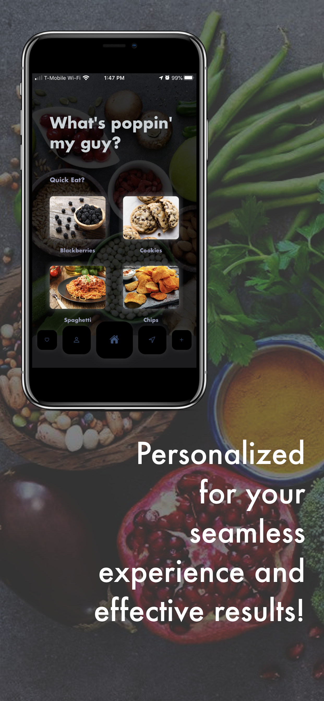
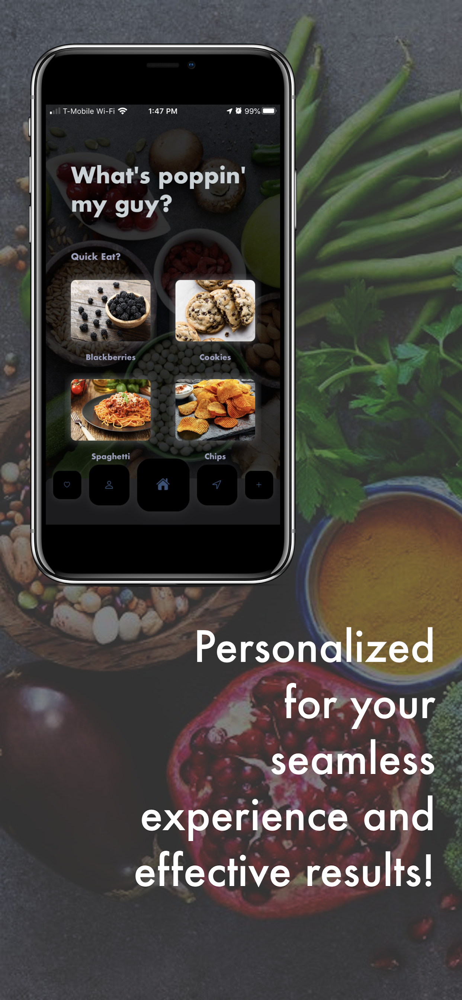

This is
Ozan Mirza's
Advanced Programmer's Workshop page.
GitHub
Return to main page!
Email
The first project I worked on this year was the class website while reorganizing the project structures. I was able to refresh my knowledge of webpaging. I also used object-oriented programming to automate the process of adding individual profiles to the website, which got rid of the ugly hard-codedness.

This was my next project. I started working on it for the Congressional App Challenge to Carolyn Maloney (NY-12) representative. It is now on the iOS App Store. This app is essentially a food journal, but is also the easiest possible thing to use. All it requires from the user is to take a picture of the food. It then uses it's AI to determine what food it is, and fetches the nutrition data of that food from an API that works with the USDA. The user then adds it to their journal which they can look back to anytime. The app also calculates what nutrition is in the user's body, and suggests what to eat next to live a happier and healthy lives. AND, the app even looks at what the user ate before and reccomends them locally owned, healthy restaurants that are near them and that they would love. All of the user's data is stored in their iCloud. The whole point of this app is to help the user with their diet and help them live happier, healthier lifestyles.


![ This was my next project. I started working on it for the Congressional App Challenge to Carolyn Maloney (NY-12) representative. It is now on the iOS App Store. This app is essentially a food journal, but is also the easiest possible thing to use. All it requires from the user is to take a picture of the food. It then uses it's AI to determine what food it is, and fetches the nutrition data of that food from an API that works with the USDA. The user then adds it to their journal which they can look back to anytime. The app also calculates what nutrition is in the user's body, and suggests what to eat next to live a happier and healthy lives. AND, the app even looks at what the user ate before and reccomends them locally owned, healthy restaurants that are near them and that they would love. All of the user's data is stored in their iCloud. The whole point of this app is to help the user with their diet and help them live happier, healthier lifestyles.](images/thumbs/dr-foodie.png){kind=link}